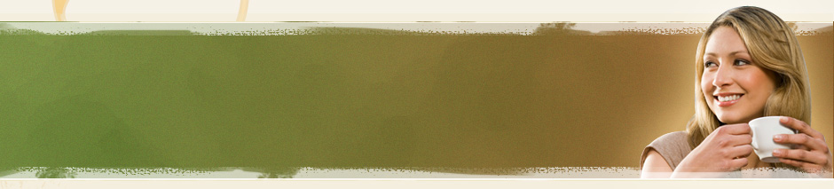

About US!
About
Our Dream
We were founded with the dream of making a lasting impact on our community by donating proceeds from the sales of our small batch roasted coffees and scratch made breakfast items.
We Provide:
Single origin light roast espressos, or Italian style blended sipping espresso.
Rotating single origin coffees for Pour Over's or AeroPress.
Monin brand, all natural syrups.
Fresh baked pastries and Gluten Free treats.
Scratch made breakfast entrees brought to your table.
Be Part of Our Community
If you're experiencing issues and concerns about this website template, join the discussion on our forum and meet other people in the community who share the same interests with you.
Giving
Proceeds donated to organizations helping women and children in crisis in Boise and Ethiopia.